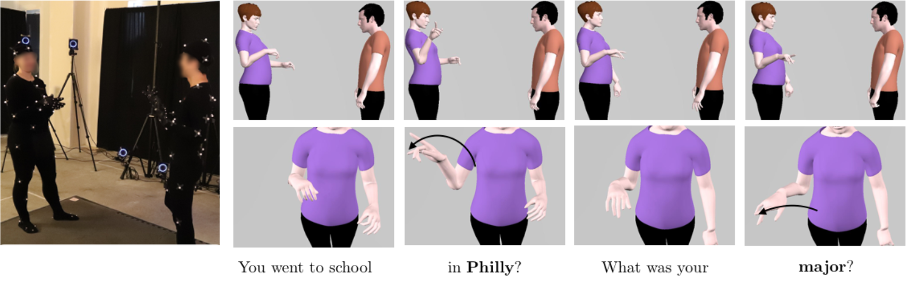
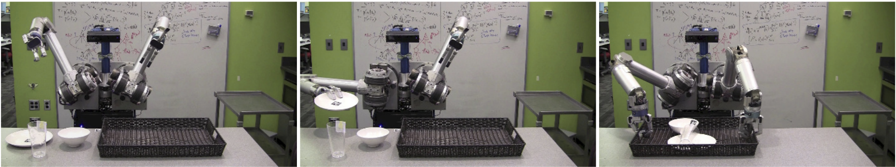

CEO & Founder of Zordi. PhD in Robotics AI from Paul G. Allen School of Computer Science & Engineering at the University of Washington
Projects
The Curious Minded Machine
Curiosity is widely recognized as a fundamental mode of cognition and is particularly critical during childhood development. Developing intelligent robots with a sense of "curiosity" may lead to an important breakthrough in artificial intelligence: agents that proactively expand their knowledge and capabilities by themselves through information-generation. We propose a principled Bayesian reinforcement learning (BRL) framework that incorporates a mathematically elegant way to model curiosity. We show that BRL yields naturally curious behaviors that benefit long-term task performance. I have been the main research scientist for BRL algorithms. This project is collaboration among University of Washington, CMU, University of Pennsylvania, MIT, and Honda Research Institute USA.
SARA is a research collaboration with U.S. Army Research Laboratory's Combat Capabilities Development Command (CCDC). We work on increasing the operational tempo and mobility of autonomous ground systems to traverse complex off-road environments. I am coordinating the University of Washington team and integrating a fast and optimal motion planning algorithm, Generalized Lazy Search. We will be participating in a two-week experimentation event in Oct 2020, at Base Camp Lejeune in North Carolina.
Eating is an activity of daily living (ADL) and losing the ability to self-feed can be devastating. Eating free-form food is one of the most intricate manipulation tasks we perform everyday, demanding robust non-prehensile manipulation of a deformable hard-to-model target. Through this project, we develop algorithms and technologies towards a robotic system that can autonomously feed people with upper-extremity mobility limitations. I have co-implemented the system, designed and implemented bite-picking strategies.
Our goal is to democratize robotics with MuSHR, the Multi-agent System for non-Holonomic Racing. We are developing a low-cost racecar platform with open-source software, tutorials, and class assignments. We want anyone from high school students to Ph.D. researchers to be able to learn about and perform research in robotics. Each MuSHR racecar is fitted with a full-suspension base, IMU, NVIDIA Jetson TX2, YDLIDAR laser scanner, and Intel RealSense RGBD camera. We have over 20 racecars in our fleet.
I have been mainly in charge of developing motion planners to be used in undergraduate coursework, setting up an optical motion capture system, and multi-car control.
Learning Human Gestures and Synthesizing Real-time Finger Motions

To work in uncertain environments with humans, robots must understand how humans behave and communicate. Human behavior involves the highly structured, multi-channel coordination of gaze, gesture, verbal and facial movements. To address the challenge of interpreting human gestures, we have collected a multimodal, wholistic dataset of people having social interaction captured with a motion capture system, which amounts to 16.2M frames. This is the largest dataset available. The statistical analysis verifies strong intraperson and interperson covariance of arm, hand, and speech features, potentially enabling new directions on data- driven social behavior analysis, prediction, and synthesis. We further demonstrate the use of this dataset to synthesize finger motions aligned with speech. I have been the lead developer on this project and the first author of the published ICCV 2019 paper.
Human-robot collaboration can enable humans to work on safe and less physically demanding tasks while robots take care of risky and heavy-payload tasks. In order for humans and robots to collaborate safely and swiftly, robots need to understand human intentions and act in a way that is predictable and legible from human perspective. We have proposed a unified generative model of human reaching motion that allows the robot to infer human intent and plan legible motions. Our study on human reaching motion reveals that elliptical motion model yields a good fit to empirical data. I have analyzed the collected user study data and implemented legible robot motions.
Multi-step Mobile Manipulation with Error-recovery

HERB performing a table-clearing task via sequential motion planning
Household manipulation presents a challenge to robots because it requires perceiving a variety of objects, planning multi-step motions, and recovering from failure. In collaboration with Toyota Motor Engineering & Manufacturing North America, we have worked on practical practical techniques that improve performance in these areas by considering the complete system in the context of this specific domain. We validate these techniques on a table-clearing task that involves loading objects into a tray and transporting it. The results show that these techniques improve success rate and task completion time by incorporating expected real-world performance into the system design. I was in charge of error detection and recovery and empirical evaluation of the overall system.
AIKIDO is a C++ library, complete with Python bindings, for solving robotic motion planning and decision making problems. This library is tightly integrated with DART for kinematic/dynamics calculations and OMPL for motion planning. AIKIDO optionally integrates with ROS for execution on real robots. AIKIDO is currently being used across multiple labs and projects including University of Washington, Carnegie Mellon University, University of Southern California, and Robotics Collaborative Technology Alliance (RCTA, sponsored by US Army Research Laboratory).
I am one of the lead developer and maintainer of the library.
HERB, the Home Exploring Robot Butler, serves as the realistic testbed for all of our algorithms and as a focal point of our industry and academic collaborations. It is a bimanual mobile manipulator comprised of two Barrett WAM arms on a Neobotix base. It is equipped with a suite of image and range sensors, including the Carnegie Robotics MultiSense SL and Intel RealSense. I have been mainly in charge of designing the 3rd generation of HERB and maintaining its perception and control pipelines.